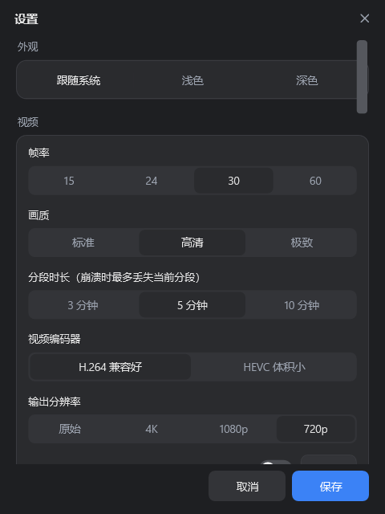
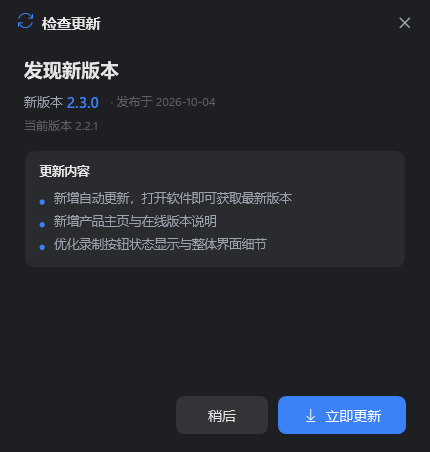

从录制、收音到后期处理，极光录屏把专业能力做得简单顺手，开箱即用。
全屏、自定义区域、指定窗口三种模式，框选即录；录制时主界面自动隐藏，只留不进画面的悬浮小控件。
WASAPI 高清采集系统声音与麦克风，独立调节音量并实时混音；支持智能降噪，让人声更干净。
调用显卡硬件编码器输出 H.264 / HEVC，恒定帧率、画面流畅，CPU 占用低且成片体积更小。
按时长分段无缝写入，意外断电或崩溃也只损失最后一小段；重启后可自动恢复、合并已录制内容。
按键可视化、鼠标聚光灯、点击高亮、步骤编号与自定义水印，教程演示重点一目了然。
半透明提词窗跟随语速滚动，字号、边距自由调节，且自动排除在录制画面之外，口播不再忘词。
设定开始时间与录制时长，到点自动开始、到时自动停止，无人值守也能准时完成录制任务。
本地语音识别自动生成并导出 SRT 字幕；高通、谱减与噪声门多重处理，有效抑制环境杂音。
摄像头画中画可设形状、位置与大小；支持绿 / 蓝幕色度键抠像，轻松合成个性化讲解画面。
没有繁杂的菜单与层层弹窗，常用功能触手可及。
选择范围，一键开始录制

帧率、画质、编码专业可调

新版本一键下载，永不过时
软件会在启动后安静地检查新版本，发现更新时才温和提示；下载经过完整性校验，一键应用并自动重启，无需手动找安装包。